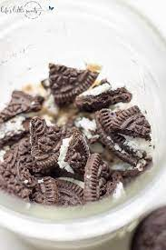

Oreo Overnight Oats

Description
This overnight oats recipes is delicious and quick to make and will keep you full for the entire
morning!
This page will show you all the ingredients you need and how to make this delicious meal.
Ingredients
- Two Oreos, crushed
- 50g 0% Fat Greek Yoghurt
- 150g Almond Milk
- 35g Whey Protein Powder - Cookies and Cream flavour
- 50g Oats, steel-cut
Steps
- Add almond milk and whey protein powder to blender and blend until smooth
- Mix crushed oreos and 0% fat greek yoghurt in a bowl
- Add oats and oreo/greek yoghurt mix to container with protein blend
- Stir thoroughly and place in fridge overnight
- Bring the oats to work with you the following morning and enjoy!